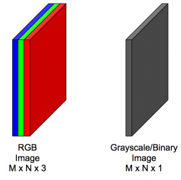
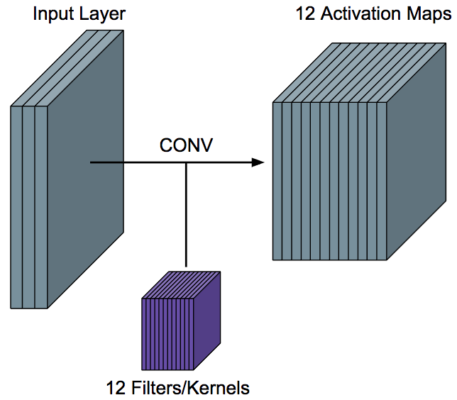
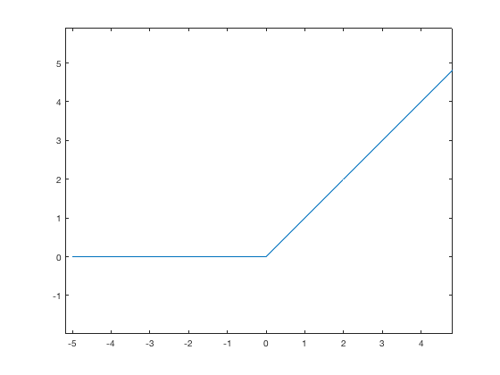
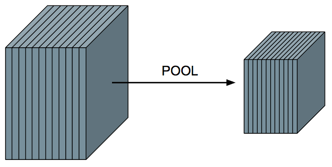
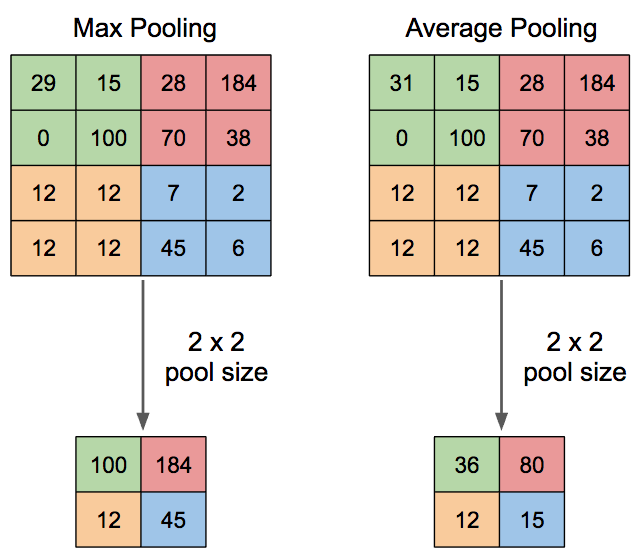
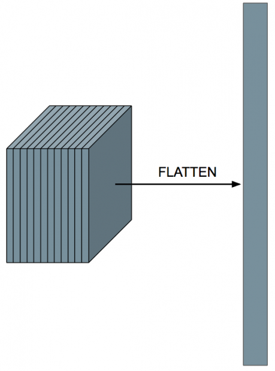

Convolutional Neural network Overview¶
in this additional note we describe some concept mentioned about but in this case from the theory perspective, we make mentione of an architecture called LeNeT-5 which is a convolutional network designed for handwritten and machine-printed character recognition.
From this architecture, we need to consider that we are not flatten the image in any way in order to maintain the spatial relationship between the pixels ( if we flatten we will lose that spatial information).
Now for the input we need to think in different ways: in terms of 3D Volumes this means that the image has a depth associated with it. This is called the number of channels. For example, a color image or a RGB image of M * N will have 3 channels ( one r, B, and G) so the full shape will be $ M * N * 3$ in contrast to a gray scale image that will be M * N * 1, this input are called image volumes.

In this architecture we have three different kinds of layers: Convolutional Layer, pooling Layer, and fully-connected Layers.
Convolution Layer¶
This is the most important layer in CNNs: it gives the CNN its name, The convolution Layer, is where the feature learning happens, the idea is that we have a number of filters or kernels. These filters are just small patches that represent some kind of visual feature, "weights" and "biases" of the CNN.

We take each filter and convolve it over the input volume to get a single activation map, so in other words, we convolve a filter with an input volume to get back a activation map that tells us "How well" parts of the input "respond" to the filter.
Like in the example mentioned before about the horizontal lines and vertical lines, in the case of the horizontal line, we use a horizontal line filter, that will generate a activation map that indicates where the horizontal lines are in the input. The best part of CNN is that this filter are not hard-coded, they are learned, that means that we don't need to explicitly tell the CNN to look for horizontal lines, it will do all it by itself during the backprop.
In this Convolution Layer (or CONV Layer), we need to specify at least the number of filters and their size (width and height). some additional parameters will be padding and stride (not cover here), in terms of input and outputs, suppose a CONV layer receives an input of size
(assuming zero padding and stride 1), the output width and height of the output activation maps will be
and
where F_w and F_h are the width and height of the filters then the output will be $$ W_{out} * H_{out} * F $$
so for a an image volume of 32x32x1 with a filter size 5x5 and 6 of depth we will have an output action map of 28x28x6
Immediately following the CONV layer, we apply a non-linearity to each value in each activation map over the entire volume. The Rectified Linear Unit or ReLU is most freaquent used for CNNs

it is zero for x<=0 and x>0, this is the activation use most frequently and that work well with this kind of scenarios.
Pooling Layer¶

This layer is primarily used to help reduce the computational complexity and extract prominent features, the pooling Layer (POOL) has no weights/parameters, unlike CONV layers. The result is smaller activation volume along the width and height. the depth of the input is still maintained, so if 12 activation maps go to the POOL layer, the output will also have 12 activation maps.
For the POOL layer, we have to define the pool size, which tells us by how much we will reduce the width and height of the activation volume, if we want to halve the activation volume in width and height, we would choose a pool size of 2x2, if we wanted to reduce it by more, we should choose a larger pool size.
The computation we do depends on the type of pooling: average or max.

For max pooling, inside of the window, we just choose the maximum value in that window. This intuitively corresponds to choosing the most prominent features. For average pooling, we take the average of the values in the window. This produces smoother results than max pooling.
In practice, max pooling is used more frequently than average pooling, and the most common pooling size is 2×2.
Fully-Connected Layer¶
This layer is the common artificial neural network, the catch, we have a activation volume as output of the CONV and POOL Layers, and this layer accept just a vector, so we will need to flatten this volume.

After flattening the volume, we can treat this layer just like a neural network! It is okay to flatten here since we’ve already passed through all of the CONV layers and applied the filters.